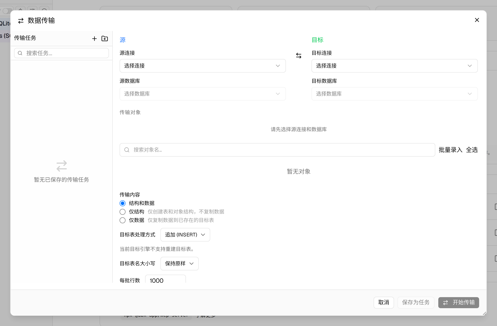
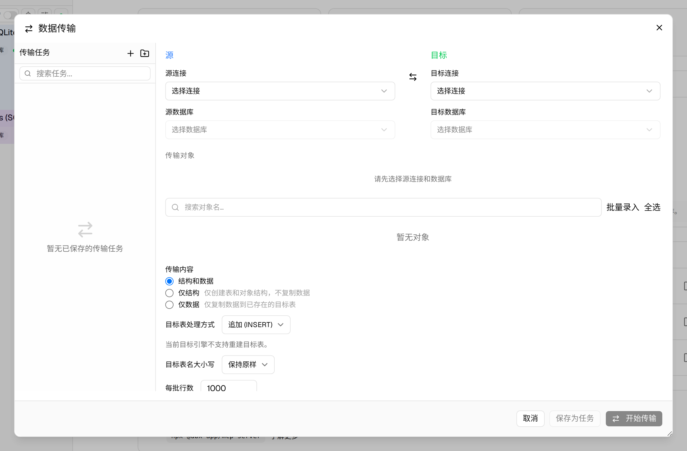

#11554 界面预览
commit fc8d50a · 回到 PR · 这次改动把数据传输能力扩展到 Oracle/OceanBase Oracle 的包规格、包体、私有同义词和公共同义词，并在传输对话框里加入了对象冲突策略、依赖/预检提示以及对象级执行结果展示。后端还会为这些对象生成独立预检与迁移计划，失败时保留恢复信息。
⚠️ 这次录制有 5 步没能按计划执行；带 ⚠️ 的截图拍摄于步骤失败之后，画面未必是说明文字所描述的状态。
红线是鼠标走过的轨迹，红色圆环是一次点击；底部文字是这一步在做什么。多个场景各自从应用初始状态开始。空格暂停，← → 逐段查看。

打开数据传输对话框 · 查看数据传输对话框中的对象选择区域和新增的对象类型提示

⚠️ 查看对象冲突策略和依赖提示 · 查看对象冲突策略和依赖提示区域
查看传输进度里的对象结果区 · 查看传输进度对话框中新增加的对象结果展示区域位置